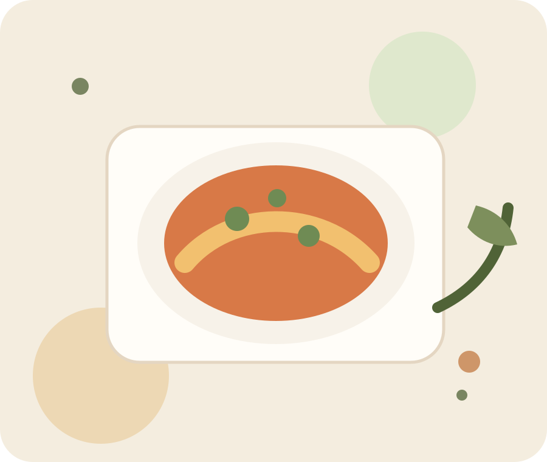

Minimal navigation
Brugeren kan hurtigt bevæge sig fra forside til kategori og videre til opskrift.
Smagfulde opskrifter er et designforslag til en enkel madprototype, hvor brugeren hurtigt kan finde inspiration til morgenmad, frokost, aftensmad og snacks.

Hver kategori har en tydelig hovedret, så prototypen kan demonstreres uden ekstra data eller backend.
Brugeren kan hurtigt bevæge sig fra forside til kategori og videre til opskrift.
Alle madillustrationer ligger som SVG-filer, så projektet kan køre uden billeddownloads.
Projektet kan åbnes direkte i Visual Studio Code og køres med Live Server.